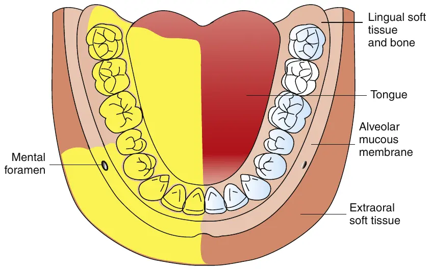
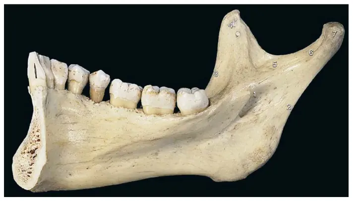

نسخه استخراجشده؛ ترجمه یا تأیید علمی انجام نشده است. وضعیت: captured
بیمار ۳۰ سالهای برای ترمیم مولر اول و دوم پایین سمت راست آمده است. استاد پیش از تزریق میپرسد: با یک IANB کدام دندانها و کدام بافتها بیحس میشوند، و کدام بافت هنوز حس دارد؟

بلاک عصب آلوئولار تحتانی (IANB) پس از اینفیلتراسیون پرکاربردترین تزریق دندانپزشکی است. خیلیها به آن «بلاک مندیبولار» میگویند که دقیق نیست. این بلاک بیشترین شکست بالینی را هم دارد، حتی وقتی درست انجام شود: گزارشهای مختلف بیحسی ناکافی را از ۳۱ تا ۸۱٪ آوردهاند و مرور ۳۶ کارآزمایی آن را حدود ۴۰٪ نشان داد.
بافت نرم باکال کنار مولرها با IANB بیحس نمیشود. این ناحیه را عصب باکال عصبدهی میکند که از بخش قدامی V3 جدا میشود؛ اگر روی این بافت کار داری، مثل گذاشتن کلمپ رابردم، جداگانه بلاکش کن.
هدف سوزن عصب آلوئولار تحتانی است، درست پیش از آنکه وارد سوراخ مندیبولار شود. سوراخ را نه میبینی و نه لمس میکنی؛ پس با سه لندمارک کار میکنی:

عصب لینگوال جلو و داخل عصب آلوئولار تحتانی و به موازات آن پایین میآید؛ برای همین معمولاً همراهش بیحس میشود. شریان آلوئولار تحتانی درست جلوی عصب است.
در کودک سوراخ مندیبولار همسطح اکلوزال است و در بزرگسال بهطور میانگین ۷٫۴ میلیمتر بالاتر. تزریق پایین در کودک اغلب جواب میدهد، ولی در بزرگسال علت شایع شکست است.
نوع سؤال: ساخت کلمه · 7 خانه
حروف منبع: ی · و · ا · ل · گ · ل · ن